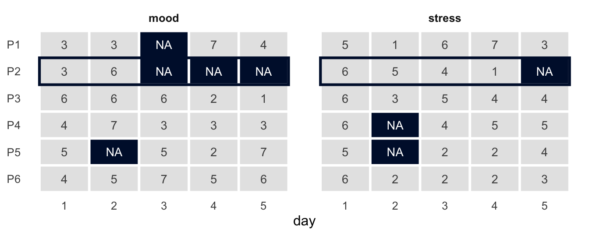
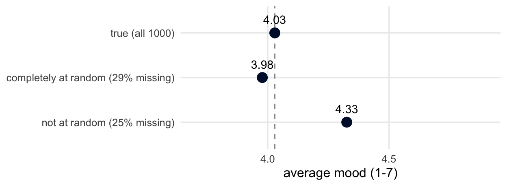
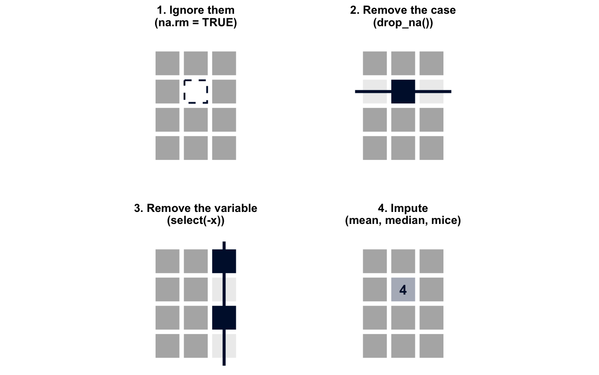
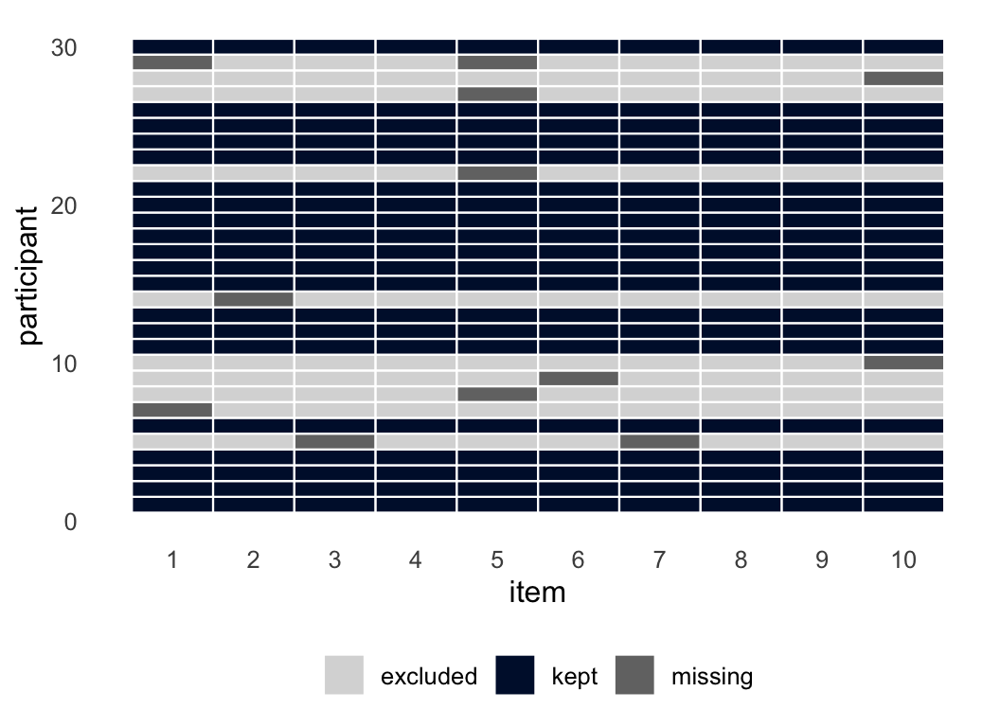
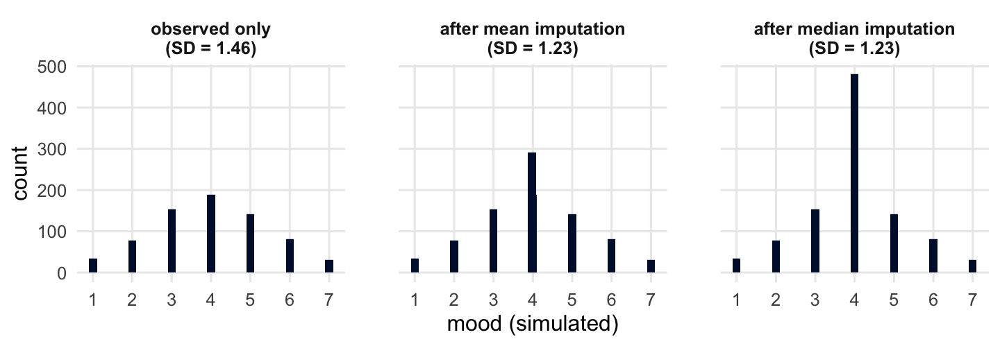
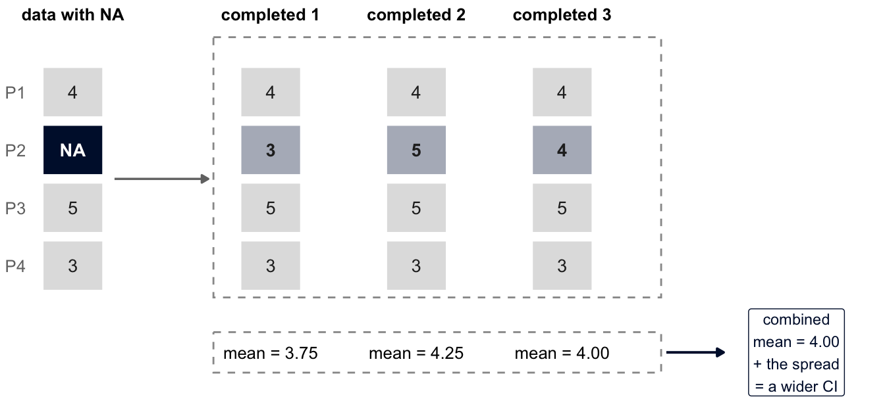
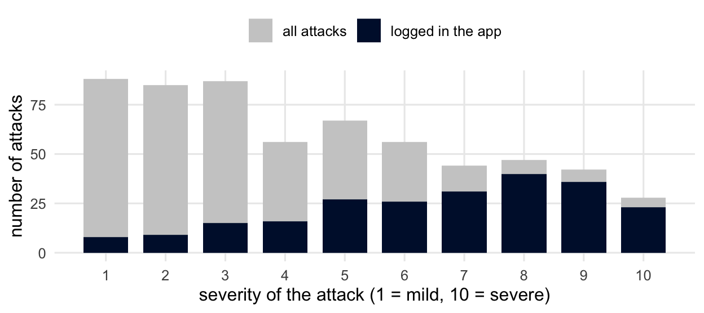

library(tidyverse)
library(behdslabs)
sum(is.na(daily_mood_ratings))
#> [1] 145
mean(is.na(daily_mood_ratings))
#> [1] 0.14523 Missing Data
Written for this book by Giorgio Arcara, with an AI assistant (Claude). This chapter is not in Irizarry’s Introduction to Data Science.
Almost every behavioural dataset has holes. Participants skip questionnaire items, forget to fill in a diary on some days, fail to respond on some trials, or drop out of a study halfway through. In R, a missing value is recorded as NA, “not available”. It is tempting to treat missing values as a nuisance that a function argument can make disappear. This chapter argues that they are data about the data: who is missing, and why, can change what a study concludes.
23.1 Counting what is missing
daily_mood_ratings contains 1,000 daily mood ratings on a 1–7 scale, collected with an app. On some days, participants did not respond:
is.na() returns TRUE for each missing value, so sum() counts them and mean() gives their proportion: 14% of the days have no rating. Most summary functions return NA as soon as one value is missing, unless we tell them to remove the missing values first:
mean(daily_mood_ratings)
#> [1] NA
mean(daily_mood_ratings, na.rm = TRUE)
#> [1] 2.3The answer NA is R being honest: the average of a set of numbers that includes unknown numbers is unknown. na.rm = TRUE gives the average of the days that were observed. Whether that is a good estimate of the participants’ typical mood is a different question, and it is the question of this chapter.
With a data frame, we usually want to know how much is missing in each column and in each row. The following data are simulated: a small diary study in which 6 participants rated their mood and their stress for 5 days.
set.seed(4)
diary <- expand_grid(participant = sprintf("P%d", 1:6), day = 1:5) |>
mutate(mood = sample(1:7, n(), replace = TRUE),
stress = sample(1:7, n(), replace = TRUE))
diary$mood[c(3, 8, 9, 10, 22)] <- NA
diary$stress[c(10, 17, 22)] <- NA
colSums(is.na(diary))
#> participant day mood stress
#> 0 0 5 3
diary |>
group_by(participant) |>
summarize(missing_mood = sum(is.na(mood)), missing_stress = sum(is.na(stress)))
#> # A tibble: 6 × 3
#> participant missing_mood missing_stress
#> <chr> <int> <int>
#> 1 P1 1 0
#> 2 P2 3 1
#> 3 P3 0 0
#> 4 P4 0 1
#> 5 P5 1 1
#> # ℹ 1 more rowMissing values are rarely spread evenly. Here, participant P2 accounts for most of the missing mood ratings (Figure 23.1). Counting missing values by participant, by item or by day is the first step of any analysis: it tells us where the holes are before we decide what to do about them.

23.2 Why the data are missing matters
Statisticians distinguish three situations, which we describe in plain words:
- Missing completely at random. Whether a value is missing has nothing to do with the participant or with the value itself: the app crashed on random days, a page of a paper questionnaire was lost. The observed values are then a random sample of all the values.
- Missing at random. Whether a value is missing depends on something else we have observed: for example, younger participants skip more days, and we know each participant’s age. Within each age group, the observed values are still representative.
- Missing not at random. Whether a value is missing depends on the value itself: participants on their worst days do not open the app at all. The observed values are then systematically different from the missing ones.
The names are confusing (the second case is not random in the everyday sense), but the idea is simple. To see why it matters, we simulate the true mood of 1,000 participants on a 1–7 scale (higher is better) and then remove ratings in two different ways: completely at random, and more often on bad days:
set.seed(2026)
n <- 1000
mood <- pmin(pmax(round(rnorm(n, 4, 1.5)), 1), 7)
# completely at random: every rating has the same 30% chance of being missing
mood_mcar <- ifelse(runif(n) < 0.3, NA, mood)
# not at random: the worse the mood, the higher the chance of being missing
p_missing <- c(0.70, 0.55, 0.40, 0.25, 0.15, 0.10, 0.05)[mood]
mood_mnar <- ifelse(runif(n) < p_missing, NA, mood)
c(true = mean(mood),
mcar = mean(mood_mcar, na.rm = TRUE),
mnar = mean(mood_mnar, na.rm = TRUE))
#> true mcar mnar
#> 4.03 3.98 4.33In both cases, a similar share of ratings is missing (29% and 25%). When ratings are missing completely at random, the average of the observed ratings is very close to the true average. When the worst days are the ones that go missing, the observed average overestimates mood by about 0.3 points (Figure 23.2), and no amount of extra data fixes it: a larger sample gives a more precise estimate of the wrong value, as we saw for biased surveys in Chapter 13.

The data alone cannot tell us which situation we are in. The missing values are, by definition, not there to compare with the observed ones. Deciding whether missingness is plausibly related to the outcome requires knowledge of the study: how data were collected, who dropped out, and why. This is a question about the design, not about the code.
23.3 Four ways to deal with missing data
Once we know where the holes are, and have thought about why they are there, we must decide what to do with them. There are four basic strategies (Figure 23.3): ignore the missing values in each analysis, remove the cases (rows) that have them, remove the variables (columns) that have them, or fill them in. Each has its advantages and its costs, and none of them fixes data that are missing not at random.

Ignore them in each analysis
The simplest strategy is the one we used at the start of the chapter: each summary or test simply skips the missing values (na.rm = TRUE, or the default behaviour of many functions). It uses every value that was observed. But each analysis then rests on a different subset of the data:
diary |>
summarize(mean_mood = mean(mood, na.rm = TRUE),
n_mood = sum(!is.na(mood)),
mean_stress = mean(stress, na.rm = TRUE),
n_stress = sum(!is.na(stress)))
#> # A tibble: 1 × 4
#> mean_mood n_mood mean_stress n_stress
#> <dbl> <int> <dbl> <int>
#> 1 4.52 25 4 27The average mood and the average stress are based on different days, and partly on different people, so they are not strictly comparable. And, as for every strategy, the averages are unbiased only if the values are missing completely at random.
Remove the case: listwise deletion
The most common way of dealing with missing values is to analyse only the rows with no missing values in the variables of interest. This is called listwise deletion or complete-case analysis, and it is what many R functions do by default. With the tidyverse, drop_na() removes every row that has at least one NA:
diary |> drop_na() |> nrow()
#> [1] 24
nrow(diary)
#> [1] 30Listwise deletion is simple, every analysis uses the same cases, and, when values are missing completely at random, it does not bias the estimates. But it can throw away much more data than we expect. Suppose a questionnaire has 10 items and each participant skips each item with probability 5%, independently. The proportion of participants with all 10 items answered is only
0.95^10
#> [1] 0.599so about 40% of the participants are excluded, even though 95% of all the answers were given (Figure 23.4). Fewer participants means wider confidence intervals and less power (Chapter 22). And if values are not missing completely at random, the participants who remain are no longer representative.

Remove the variable
Sometimes the holes are concentrated in one variable: an optional question that most participants skipped, or a sensor that failed for most of the study. Dropping that column (select(-x)) keeps every participant. It makes sense only when the variable is mostly missing and not essential to the question, because its information is lost with it. It is not an option when the variable with missing values is the outcome of the study.
Impute
An alternative is to replace each missing value with a plausible value, a procedure called imputation. The simplest version replaces every missing value with the average of the observed values:
mood_imputed <- ifelse(is.na(mood_mcar), mean(mood_mcar, na.rm = TRUE), mood_mcar)
c(sd_true = sd(mood),
sd_observed = sd(mood_mcar, na.rm = TRUE),
sd_imputed = sd(mood_imputed))
#> sd_true sd_observed sd_imputed
#> 1.46 1.46 1.23The average does not change, but the standard deviation shrinks: 29% of the values are now identical, all sitting exactly at the mean. The data look more precise than they are, confidence intervals become too narrow, and correlations with other variables are weakened. Mean imputation also does nothing for data missing not at random: filling in the worst days with the average of the better ones keeps the bias.
Replacing missing values with the median instead of the mean is also common, especially with skewed variables such as reaction times, where the mean is pulled by the long tail. It has the same problems: a spike at the median, a smaller standard deviation and false precision (Figure 23.5).

Better methods predict each missing value from the other variables and add the uncertainty of that prediction back into the analysis. The standard approach is multiple imputation (Figure 23.6). Each missing value is filled in several times, each time with a different plausible value, which gives several completed datasets that agree on the observed values and differ on the imputed ones. The same analysis is run on each completed dataset, and the results are combined: the final estimate is their average, and its uncertainty includes how much the results differ from one completed dataset to the next, which is the uncertainty caused by not knowing the missing values. In R, multiple imputation is implemented in the mice package. These methods are beyond the scope of this book, but they rely on the same assumption as listwise deletion with covariates: that the values are missing at random given what we observed.

23.4 When data are not missing at random
No method can fully repair data that are missing not at random, because the information needed to repair them is exactly what is missing. Consider a medical app in which patients log their migraine attacks, rating the severity of each one from 1 (mild) to 10 (severe). Patients log most of the severe attacks, but often don’t bother to log the mild ones. We simulate 600 attacks, most of them mild, in which the chance of being logged grows with severity:
set.seed(8)
crises <- tibble(severity = sample(1:10, 600, replace = TRUE, prob = 14:5)) |>
mutate(logged = runif(n()) < plogis(-3.5 + 0.6 * severity))
crises |>
summarize(n_all = n(), mean_all = mean(severity),
n_logged = sum(logged), mean_logged = mean(severity[logged]))
#> # A tibble: 1 × 4
#> n_all mean_all n_logged mean_logged
#> <int> <dbl> <int> <dbl>
#> 1 600 4.59 231 6.57
Only 231 of the 600 attacks are logged, and their average severity is 6.6 instead of 4.6 (Figure 23.7). The consequences go beyond a biased average:
- attacks look more severe and less frequent than they are;
- patients who log more attacks may simply be more conscientious, not sicker;
- a treatment that makes attacks milder can look like a treatment that makes them rarer, because mild attacks stop being logged;
- groups with different logging habits (for example, younger and older patients) cannot be compared fairly.
None of the four strategies above repairs this. The best defence is in the design (for example, prompting patients every day, whether or not they had an attack), together with honest reporting of what may be missing.
23.5 Reporting missing data
Whatever we do with missing values, readers need to know it. A good report states:
- how many values are missing, in which variables, and for how many participants;
- what was done with them (listwise deletion, imputation, which method), and how many participants entered each analysis;
- whether missingness could plausibly be related to the outcome, and what the consequences would be.
For the diary study, a short methods paragraph covering the three points could read:
5 of 30 mood ratings were missing (17%), 3 of them from one participant. We analysed complete cases: 24 of 30 diary days, from all 6 participants. Participants may skip the diary on their worst days, so mood may be overestimated.
Decide how missing data will be handled before looking at the results, ideally in a preregistration (Chapter 3, and in particular Section 3.9.1). Trying several approaches and reporting the one that gives the most convenient result is one more way of making a p-value meaningless.
23.6 Exercises
1. Using daily_mood_ratings, compute the mean, the median and the standard deviation of the observed ratings. Then make a table of the ratings with table(daily_mood_ratings, useNA = "always"). In two sentences, explain what you would need to know about the study to decide whether the 145 missing days could bias these summaries.
2. Using the diary data from this chapter, compute each participant’s average mood with na.rm = TRUE, together with the number of days each average is based on. Which participant’s average would you trust least, and why?
3. Repeat the simulation of this chapter, making missingness depend even more strongly on mood: set p_missing to 0.9 for a mood of 1, decreasing to 0.05 for a mood of 7. How large is the bias of the observed average? Does it change if you use n <- 100000?
4. Simulate a questionnaire with 20 items, in which each answer is missing with probability 3%, independently. What proportion of participants would listwise deletion keep? Check your answer with a Monte Carlo simulation.
5. Using the simulated mood_mcar and a second variable stress <- 8 - mood + round(rnorm(n)), compute the correlation between mood and stress with complete cases (cor(mood_mcar, stress, use = "complete.obs")) and after mean imputation of mood. What happens to the correlation, and why?
6. Using mood_mnar from this chapter, impute the missing values once with the mean and once with the median of the observed ratings. Compare the mean and the standard deviation of the two imputed versions with those of the true mood. Which imputation is closer to the truth, and does either of them remove the bias?